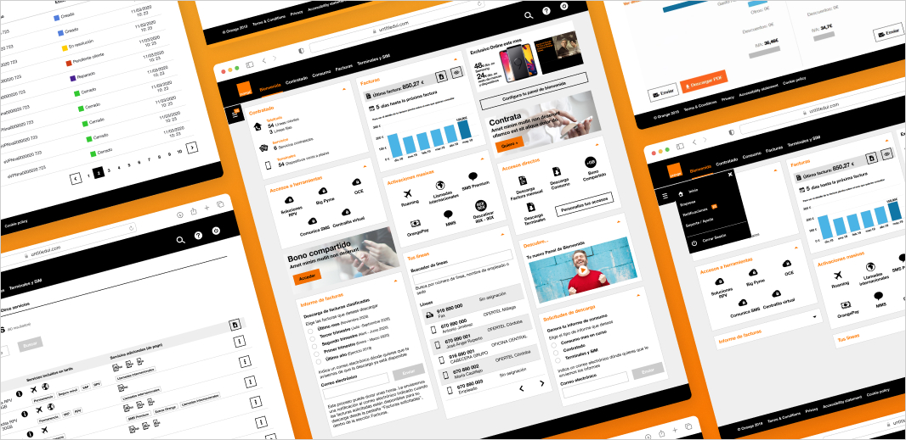
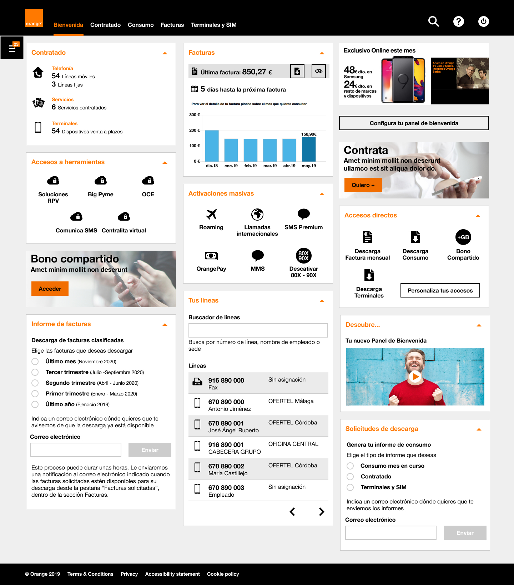
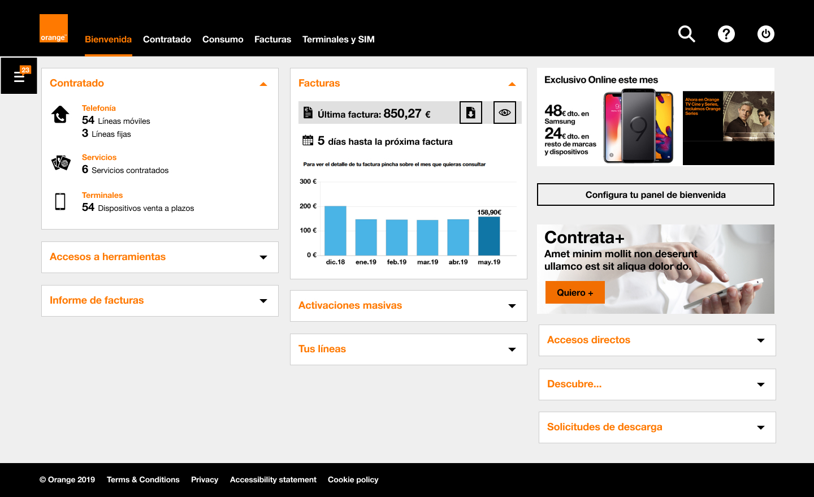
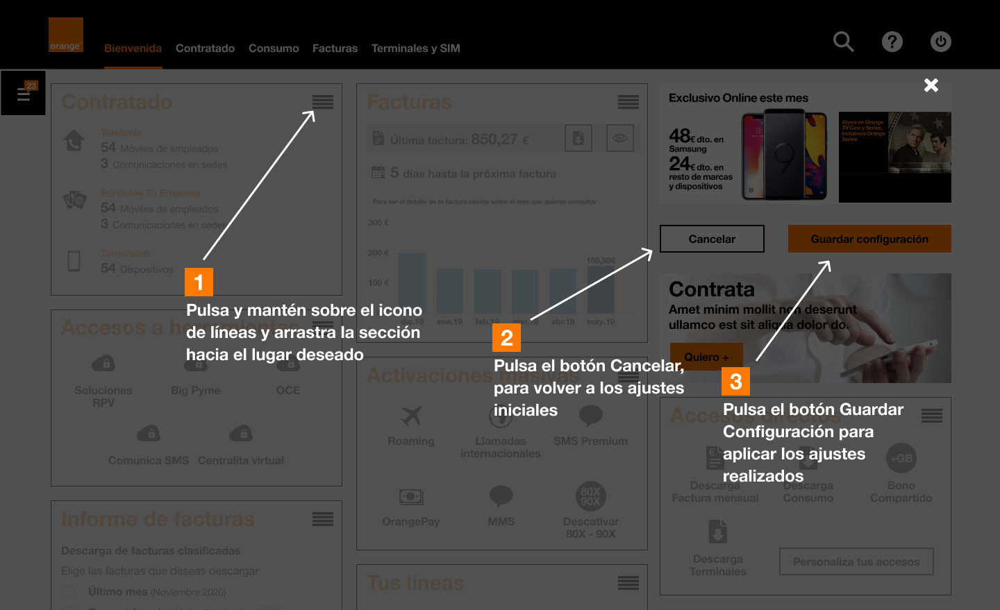

Orange Empresas

Fecha: Mar 2020 - May 2021.
Descripción: Portal de autogestión para pymes y autónomos.
Rol: Senior Product Designer (UX/UI). Como único diseñador, lideré todas las tareas de diseño: ideación, workshops, flujos UX, diseño de interfaz, prototipado, usabilidad y colaboración con un especialista en research para testing con usuarios.
Plataforma: Web responsive (escritorio, tablet, móvil).
Metodología: Agile & Design Thinking.
Herramientas: Jira, Confluence, Miro y Figma.
El problema
Orange quería construir una plataforma de autogestión para pequeñas empresas y autónomos, que les permitiera configurar, gestionar y monitorizar sus servicios contratados (facturas, consumo, herramientas, etc.).
Sin embargo, el público objetivo era muy diverso — desde un autónomo con pocos empleados hasta empresas con más de 100 personas y clientes internacionales.
"El reto: unificar ambos tipos de usuario en un mismo producto ofreciendo una experiencia adaptada que evitara la sobrecarga de información y respetara diferentes prioridades."
Propuesta de solución
Diseñamos un dashboard modular que daba a los usuarios control sobre lo que veían y cómo accedían a las funcionalidades más usadas.
Permitiendo bloques de contenido colapsables y reordenables, los usuarios podían personalizar su panel de bienvenida para centrarse en lo más importante — ya fueran facturas, activaciones de servicio o consumo de líneas.
Aunque las restricciones de negocio impedían una personalización total, equilibramos la libertad del usuario con la visibilidad estratégica de secciones clave como "Servicios contratados" y "Facturas".
Además, repensamos la navegación con dos sistemas complementarios: un menú superior principal basado en etapas del ciclo de vida y un cajón lateral contextual con opciones específicas de la empresa.
El equipo
Trabajé como único diseñador UX/UI del proyecto, colaborando estrechamente con:
- Stakeholders de negocio.
- Equipo de desarrollo.
- Un especialista en investigación de usuarios.
- Project managers y miembros del equipo Agile.
Proceso
Seguimos un enfoque de Design Thinking:
1. Empatizar
Lideré workshops con stakeholders para alinear expectativas e identificar objetivos de negocio.
2. Definir
Creamos personas representando a autónomos y pymes con diferentes necesidades y comportamientos.
3. Idear
Mapeamos journeys de usuario y bocetamos colaborativamente componentes del dashboard y flujos de navegación.
4. Prototipar
Diseñé prototipos interactivos en Figma para escritorio y móvil.
5. Testear
Los prototipos se testearon con usuarios para validar la descubribilidad, la eficiencia en tareas (ej. desactivar servicios, descargar informes) y la satisfacción.
Resultados
- Lanzamiento exitoso de un portal escalable y flexible para pymes y autónomos.
- Mejora en la tasa de éxito de tareas (ej. descarga de facturas, gestión de servicios).
- Reducción de la carga cognitiva al permitir colapsar o reordenar módulos del dashboard.
- Feedback positivo de stakeholders internos y usuarios piloto sobre las opciones de personalización.
- Reutilización del portal EGEO (Espacio Grandes Empresas Orange) con funcionalidades adaptadas para clientes más pequeños.
Aprendizajes clave
- Diseñar para el control del usuario aumenta la adopción, pero requiere una negociación cuidadosa con las restricciones de negocio y tecnología.
- La personalización no tiene que ser total — una flexibilidad parcial puede generar igualmente sensación de propiedad.
- Es crucial diferenciar el contenido manteniendo una estructura y una identidad visual unificadas.
- El proceso de onboarding es vital para ayudar a los usuarios a entender nuevos modelos de interacción como los dashboards configurables.
Conclusión
Este proyecto fue una gran oportunidad para liderar un proceso de diseño de producto end-to-end para una base de usuarios compleja. Apostando por la flexibilidad, priorizando los objetivos del usuario y trabajando de forma transversal, entregamos una plataforma que satisface tanto las necesidades de negocio como las del usuario.
También reforzó mi convicción de que dar a los usuarios claridad, control y simplicidad es siempre una inversión que merece la pena.
Galería de diseño

Dashboard desplegado (versión escritorio)

Dashboard colapsado (versión escritorio)

Onboarding para personalizar el dashboard

Menú de usuario

Página de facturas - Comparativa

Página de servicios contratados

Página de consumo

Página de navegación de productos